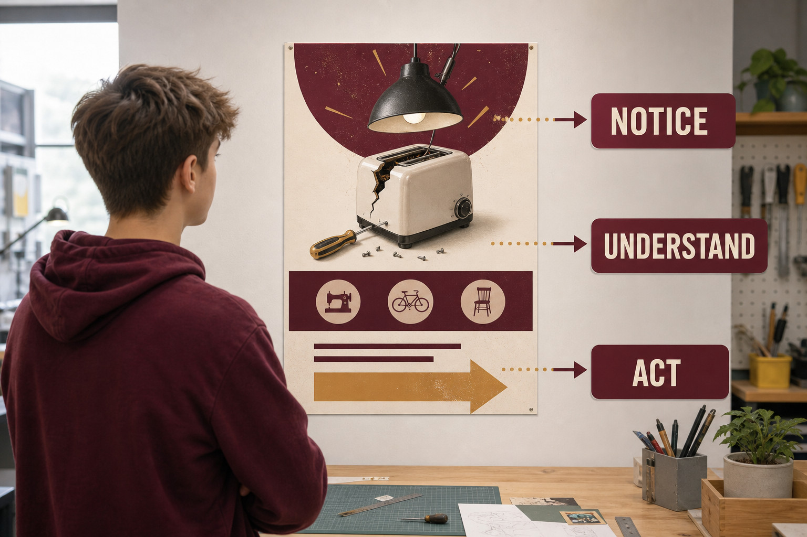
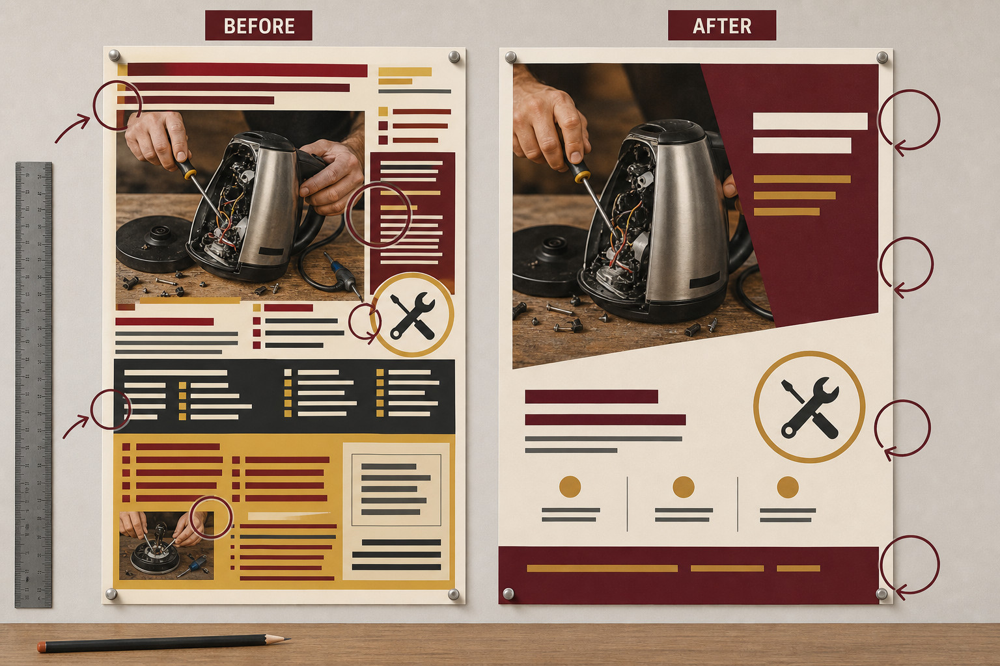
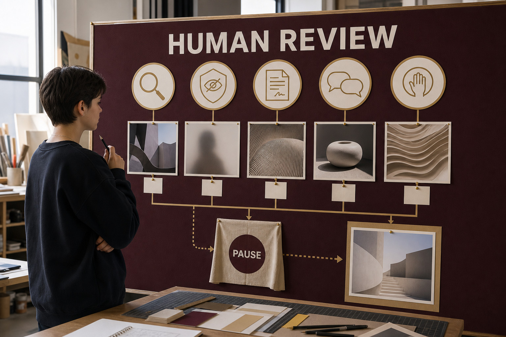
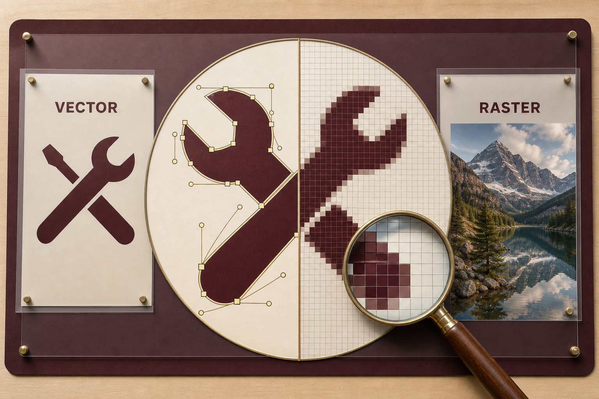
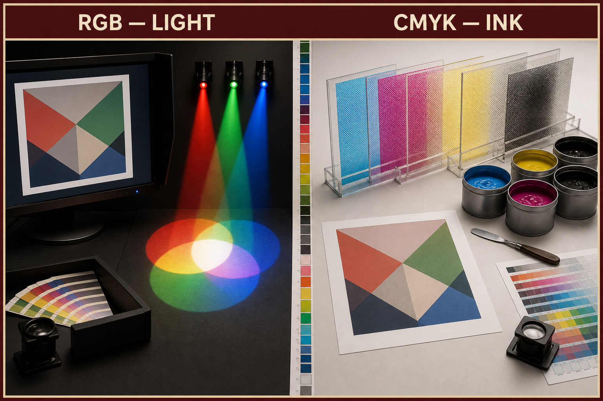
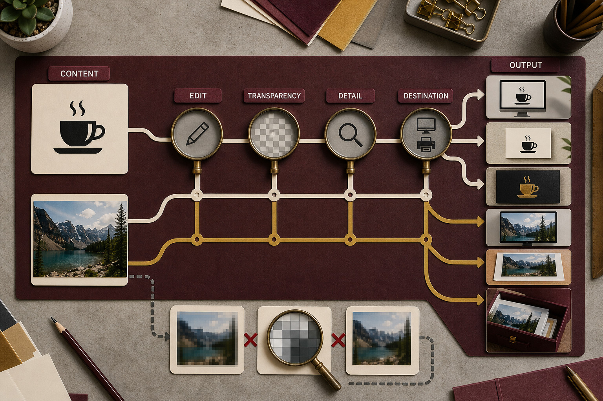
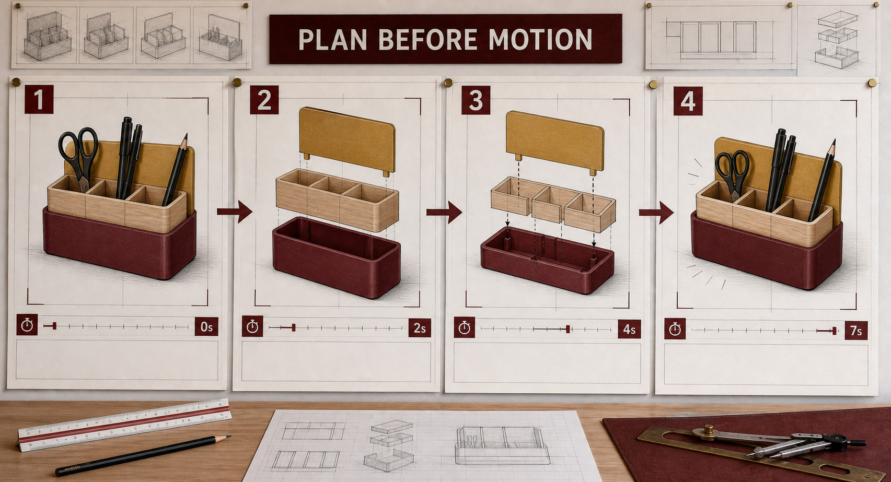
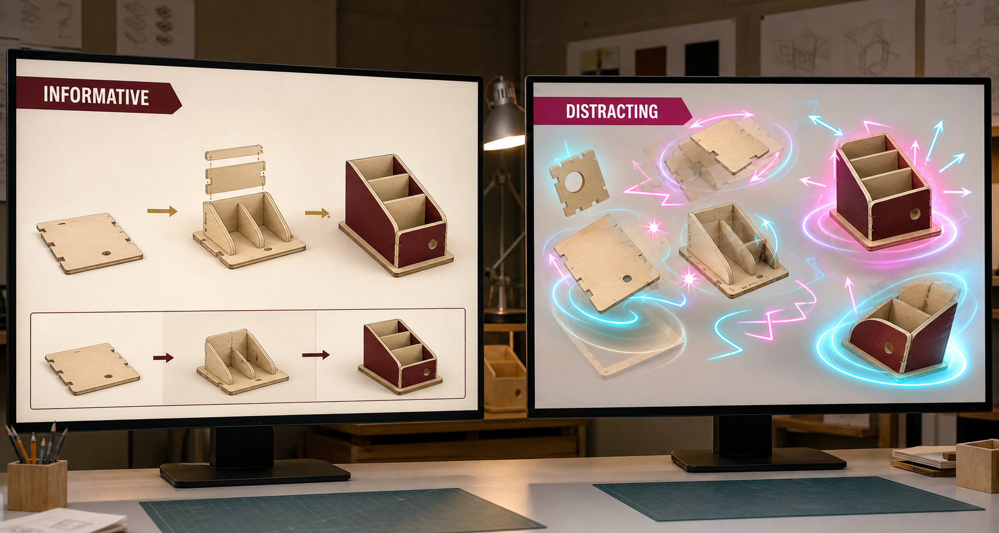
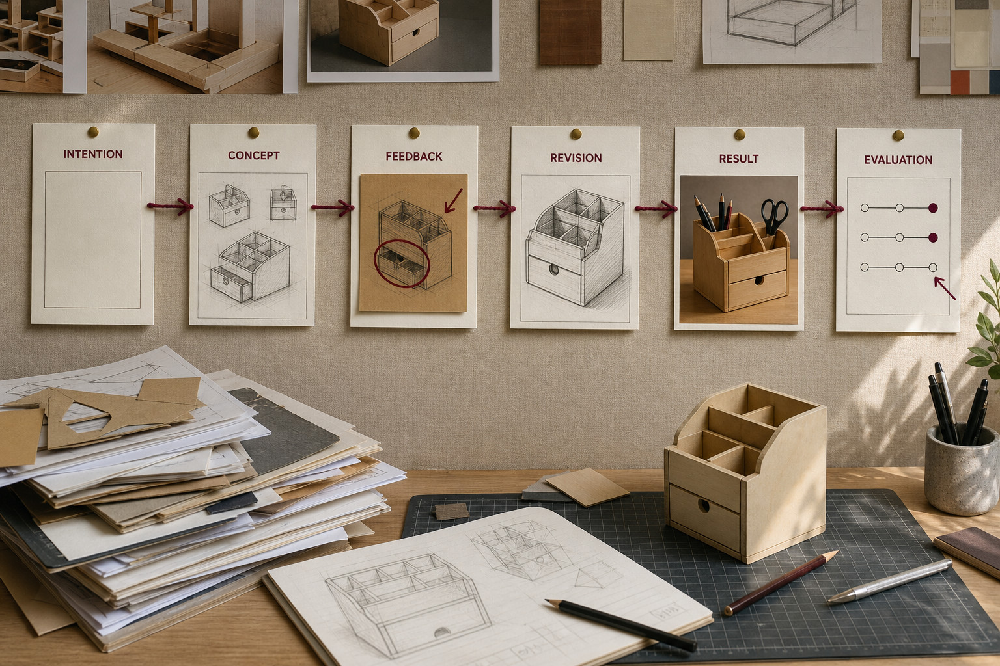
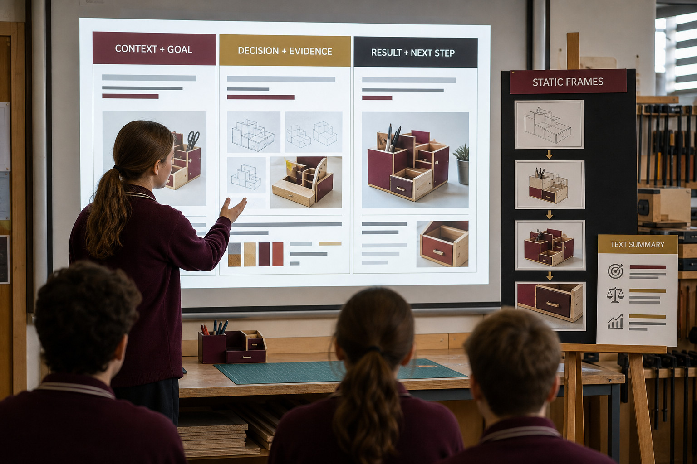

Classroom presentation
Module 4: Graphic Design and Communication
One editable eight-slide deck will teach this module's three named sections.
Download PowerPointModule 4
Develop and present responsible graphic communication while following the approved companion software and local project requirements provided by your teacher.
Three section packages · browser-local progress
Classroom presentation
One editable eight-slide deck will teach this module's three named sections.
Download PowerPointSection 01
Connect design principles to audience and purpose while checking provenance, permission, privacy and cultural authority.
Theory
Graphic design is not just about making something look good. It is about communicating clearly to people. A successful design helps its audience notice the right information, understand the message and know what to do next. Designers make deliberate choices about layout, images, type, colour, scale and space to achieve this.
Before arranging text or choosing an image, ask three questions: What does the audience need to notice? What do they need to understand? What do they need to do? These questions give the design a purpose.
Imagine you are designing a hypothetical poster for a youth repair café. The event encourages young people to bring a small broken household item and learn basic repair skills. The poster needs to communicate the event quickly to young people who may only look at it for a few seconds.
The audience probably needs to notice that the event is about repairing things, understand what the event offers and find the essential details needed to participate. The design should therefore make the event purpose and key action more prominent than supporting information.
Audience decisions affect almost everything that follows. A heading that is too small may be missed. A complicated layout may slow understanding. Decorative graphics can become a problem if they compete with important information. The question is not simply, “Does this look interesting?” A stronger question is, “Does this choice help the audience?”
A viewer rarely gives every part of a poster equal attention. Good designers use visual hierarchy to control what is noticed first, second and third.
Consider the first repair-café concept. The event title, date, explanatory paragraph and contact information are all nearly the same size. Several shapes sit behind the text. Three different type styles compete for attention, and a large decorative image occupies much of the page. Nothing is clearly in charge. A viewer has to work out where to begin.
The revision makes different decisions. The event title becomes the strongest element. A short line explaining the repair activity sits beneath it. The date, time and general participation information form a clear second group. Less important supporting information is smaller and placed lower in the composition.
This creates hierarchy through contrast and proportion. Contrast can come from differences in size, weight, shape, tone or spacing. Proportion concerns how large visual elements are in relation to each other and to the whole design. A heading does not need to be enormous simply because it is important. It needs enough visual strength to stand apart from less important information.
The revised poster therefore gives the audience a clearer path: notice the repair-café title, understand the purpose, then find the practical information. Each design decision supports communication rather than decoration for its own sake.
Adding more content does not automatically make a graphic more informative. Sometimes removing an element makes the remaining information easier to understand.
In the cluttered repair-café concept, graphics and text fill almost every available area. This weakens the composition because the parts do not work together as a clear whole. The viewer's attention keeps jumping between competing elements.
In the revision, related information is grouped and aligned. The main graphic is positioned so that it supports the title rather than fighting with it. The layout feels balanced because visual weight is distributed deliberately. Balance does not require both halves of a page to be identical. A large element on one side might be balanced by a smaller group of text or shapes elsewhere.
The revision also keeps areas deliberately empty. This negative space separates groups, gives the title room to stand out and reduces visual noise. Empty space is therefore not wasted space. It can be an active part of the design.
When reviewing a composition, try temporarily removing a shape, image or block of text. If the message becomes clearer without it, the element may not deserve its place.
Typography should help the audience read and navigate the message. For the repair-café poster, the designer could use one clear type family with differences in size and weight to establish hierarchy. The title might use a bold weight, while supporting details use a regular weight at a smaller size.
Too many type styles can create unnecessary competition. Very long lines can also be difficult to follow, while cramped spacing can make separate ideas appear connected. The designer should adjust type size, line length, spacing, alignment and grouping according to what the audience needs to read first.
Typography should also work with the rest of the composition. If a heading overlaps a busy image, contrast may become too weak for easy reading. Moving the heading into clear negative space may solve the problem more effectively than adding another decorative effect.
The goal is not to show how many formatting choices the designer can make. The goal is to make the communication easy to follow.
Graphic designers often combine their own work with material created by other people. Before using an external image, illustration or other asset, check where it came from and whether you have permission to use it for your purpose.
For the repair-café poster, the designer creates an original repair icon rather than copying one found through an image search. The designer also chooses one photograph from a source that clearly provides permission under conditions suitable for the intended use. Those conditions should be checked rather than guessed.
Attribution alone does not create permission. Writing a creator's name or web address under an image does not automatically make copying or reuse acceptable. Permission or an appropriate licence needs to exist first, and any conditions attached to that permission should be followed.
A compact source record helps the designer keep track of this information. For example:
This record is more useful than saving an unexplained image file. It shows what the asset is, where it came from and why the designer believes it can be used.
Ethical design involves more than checking an image licence. Designers need to think about people, cultures and the truthfulness of the message they create.
Aboriginal and Torres Strait Islander Cultural Expressions, signs and symbols are culturally situated. They cannot be treated as a collection of generic decorative graphics or copied simply because something appears in online research. Cultural material can have particular meanings, relationships, responsibilities and permissions connected to people and communities. Appropriate local protocols, relationships and permissions matter when working with culturally situated material. A designer should not invent, imitate or casually reuse cultural imagery to make a graphic appear “Australian” or more visually interesting.
Similar care is required with AI-assisted material. A digital tool may help generate or modify text or imagery, but its output is not automatically accurate, appropriate, original or suitable for use. The designer remains responsible for checking the result. AI assistance does not remove the need to verify information, consider sources and permissions, protect privacy or avoid misleading an audience.
Before completing the hypothetical repair-café poster, the designer performs a short ethics check:
The final repair-café poster is stronger because these checks work together with the visual design. Its hierarchy directs attention to important information. Contrast and proportion separate major and minor elements. Balance and negative space reduce clutter. Typography supports reading. The original icon avoids unnecessary copying, and the permissioned photograph has a source record.
Good graphic communication is therefore both visual and responsible. The designer controls what the audience notices, understands and does, while also taking responsibility for the material used to communicate that message.
Purposeful visuals



Media pathway
Watch or read for: No video assigned. Reading focus: What evidence shows that a source is permitted for the proposed use, and which uncertainty should stop reuse until checked?
Use the reading and still-image pathway below; no video is required for this section.
Primary source: Communication Technology 7-10 Syllabus (2025) - Graphic design and communication. Return to the theory explanation.
Applied Learning Activity
Test a design choice against audience needs and responsible source use.
Open the full activityFormative learning evidence
This browser-local record is not formal submission or teacher verification.
Higher-order capstone · evaluate
Section 02
Choose image structure, resolution, colour and layout according to the communication purpose, not software habit.
Theory
Graphic design is about making visual information clear, purposeful and suitable for its audience. The choices you make about image type, colour, spacing and file output all affect how well a graphic communicates. There is rarely one format or layout that is best for every job. Good designers consider the content, the intended audience and where the finished graphic will be used.
Digital graphics are commonly built using two different kinds of image information: vector and raster.
A vector graphic is constructed from mathematically defined shapes such as lines, curves, circles and polygons. The software stores information about each shape, including its position, size, outline and fill. Because these shapes are calculated rather than stored as a fixed collection of pixels, they can usually be enlarged or reduced while keeping their edges smooth.
Vector graphics are useful for elements such as icons, symbols, diagrams, simple illustrations and lettering. For example, you could draw an original spanner-and-leaf icon for a youth repair-cafe using basic geometric shapes and curves. Because it is your own design, it avoids the problems involved in copying a protected logo or character.
A raster image is made from a grid of tiny coloured squares called pixels. Photographs are normally raster images because each pixel can store a different colour and brightness. This allows raster graphics to represent detailed textures, shadows, faces, materials and natural scenes.
Neither type is automatically better. A vector icon may be ideal for a simple symbol, while a permissioned photograph may be better for showing real people repairing an object. The content and destination should guide the choice.
Raster graphics contain a fixed amount of captured image detail. When a raster image is enlarged, the software has to spread its existing pixels over a larger area. At high enlargement, individual pixels or groups of pixels may become visible. Edges can begin to look blocky or soft. This effect is commonly called pixelation.
Vector graphics behave differently because their shapes are recalculated when they are scaled. A circle remains mathematically circular rather than becoming a larger arrangement of stored pixels. This is why a simple vector symbol can often be resized more freely than a raster photograph.
Resolution numbers need to be interpreted carefully. Changing a setting so that an image has a larger resolution value does not magically recreate detail that was never captured in the original image. Software may create extra pixels by estimating colours between existing pixels, but those new pixels do not contain genuine missing detail. A small, blurry photograph does not become truly sharp simply because its resolution number has been increased.
When selecting a raster image, it is therefore better to begin with an image that contains enough useful detail for the intended destination. A small image used on a compact screen card may be acceptable, while the same source image might become visibly poor if enlarged much further.
Digital graphics also use different systems for describing colour. Two important models are RGB and CMYK.
RGB stands for red, green and blue. It is a light-based colour model commonly used for screens. Displays create colours by producing different amounts of red, green and blue light. Because phones, tablets, monitors and many digital displays produce light, RGB is commonly suited to graphics whose destination is a screen.
CMYK stands for cyan, magenta, yellow and black. It is an ink-based colour model commonly used in print workflows. Instead of producing coloured light, printed inks affect the light reflected from paper or another printed surface.
RGB and CMYK do not produce every colour in exactly the same way. A bright colour that looks strong on a glowing screen may appear different after conversion for printing. The final result can also be affected by the display, printer, ink, paper and other output conditions. Designers should therefore avoid assuming that a colour will look identical everywhere.
For the hypothetical youth repair-cafe information card in this section, the destination is a screen, so an RGB workflow is a reasoned choice. If the same design were later prepared for another destination, its colour treatment would need to be reconsidered rather than simply assuming the original settings were suitable.
A layout becomes easier to organise when elements have clear relationships. Designers often use grids and guides to help position text, images and shapes.
A grid is an underlying arrangement of columns, rows or repeated spaces. It can help align edges and create consistent distances between elements. Guides are temporary reference lines that help designers position objects. They assist the design process but do not need to appear in the finished graphic.
Consider the repair-cafe information card. A simple grid could divide the card into an image area and a text area. The original vector icon might align with the heading, while the permissioned raster photograph occupies a larger space below. Short supporting text could align to the same column edge. Annotations on a planning version could identify the main alignment lines and spacing decisions.
A grid is not a machine for producing a perfect design. It gives the designer a structure for making decisions. Elements can sometimes cross or break the grid deliberately when doing so strengthens the communication. The important point is that the choice is intentional rather than accidental.
Visual hierarchy helps the audience understand what to notice first, second and third. Designers create hierarchy by changing features such as size, position, weight, contrast and spacing.
On the repair-cafe card, the title might be the most prominent text because it identifies the message quickly. A short line explaining the event could have less emphasis, followed by supporting information. The photograph might attract attention, while the icon helps establish a recognisable visual theme. The relative importance of these parts should match the purpose of the card.
Negative space is the unused space around and between visual elements. It is not simply empty space that needs to be filled. Appropriate negative space can separate groups, improve readability and make important elements easier to notice. Crowding every part of a layout with text, icons or decoration can weaken communication.
For example, placing the heading, icon, photograph and several text blocks tightly against one another may make the repair-cafe card feel confusing. Increasing the space between groups can help show which information belongs together. However, spacing still involves judgement. Too much separation can make related items feel disconnected.
Grids, guides, hierarchy and negative space provide useful design principles, but they do not remove creativity. Two designers can use the same content and still produce different effective layouts. Graphic communication involves testing alternatives and judging which arrangement best suits the audience and purpose.
When the design is complete, it must be prepared for its intended destination. The most suitable output choice depends on what the file needs to preserve and how it will be used.
For the repair-cafe screen card, the designer needs to consider several types of content. The card contains an original vector icon, a permissioned raster photograph, short text and an RGB colour workflow. The final file needs to display these elements clearly on the intended screen destination.
A sensible decision process begins with questions rather than a fixed rule: Does the destination support the file type? Does the output preserve the required visual quality? Does it handle the combination of text, vector shapes and photographic detail appropriately? Is the resulting file practical for its intended use?
Different situations can lead to different answers, so this section does not prescribe one universal format, pixel size, DPI or PPI value, bleed setting, colour profile or compression setting. Those choices depend on the destination and production requirements. A designer should understand why a setting is being chosen rather than copying a number without knowing what it controls.
The same principle applies when combining assets. A graphic-design project might include an image or diagram previously created in Onshape, but that asset should be treated as supplied visual content here. Creating or editing CAD geometry is a separate process and is not part of this graphic-design workflow.
Purposeful visuals



Media pathway
Watch or read for: No video assigned. Visual focus: Which properties must remain crisp when scaled, which depend on pixel detail, and where does layout guide the reader first?
Use the reading and still-image pathway below; no video is required for this section.
Primary source: Communication Technology 7-10 Syllabus (2025) - Graphic design and communication. Return to the theory explanation.
Applied Learning Activity
Choose image structure, colour and layout evidence for a stated communication output.
Open the full activityFormative learning evidence
This browser-local record is not formal submission or teacher verification.
Higher-order capstone · evaluate
Section 03
Use purposeful motion, selected development evidence and a clear presentation sequence to explain decisions.
Theory
Good graphics do more than look polished. They communicate an idea clearly to a particular audience. Motion can explain relationships and change, a portfolio can show how a design developed, and a presentation can turn that evidence into a clear story about your decisions and results.
Motion is useful when movement helps the audience understand something that would be harder to explain in one still image. Before adding an effect, ask: What will the movement help the audience understand?
Motion might have a job such as:
Decorative movement is different. Spinning text, unnecessary zooms, bouncing objects and repeated transitions may attract attention, but they can also compete with the message. If viewers are noticing the effect instead of the idea, the motion is not doing its job.
A useful test is to describe the motion in one sentence: “This movement helps the viewer understand…” If you cannot finish that sentence with a clear communication purpose, simplify or remove the effect.
A storyboard plans an explanation before you build it. It lets you solve communication problems quickly, without spending time polishing movement that may not be needed.
For each storyboard frame, consider six things: goal, frame content, movement, timing, caption and purpose.
Imagine a hypothetical desktop organiser made from three main parts: a base, a vertical divider and a small front tray. Your goal is to make a short 6–8 second explanation showing how the three parts relate. If a CAD view is useful, an Onshape exploded-view concept can separate the components so their relationship is easier to see. The communication plan does not depend on any particular method of exporting from CAD.
The movement is restrained because every change has a job. Extra spins, flashes or dramatic transitions would add activity without adding useful information.
Not every viewer experiences motion, colour or audio in the same way. A communication should therefore remain understandable when one of those features is unavailable or difficult to use.
Important information should not depend on colour alone. For example, instead of showing “part A” only in red and “part B” only in green, also use names, numbers, patterns, shapes or clear labels. If audio is used, essential meaning should also be available visually. Likewise, the audience should not have to watch movement to discover information that could be provided in a readable form.
Moving content can also distract some viewers. Where motion is presented interactively, sensible user control over movement can make the information easier to use. In your own design thinking, the simpler rule is useful: motion should support attention, not fight for it.
This sequence carries the same central meaning as the moving version. A viewer can therefore understand the explanation without relying on animation, colour differences or sound.
A portfolio records important parts of a design process so another person can understand what you intended, what you tried, what changed and how successful the result was. It is curated evidence, not a dump of every file you created. It is also more than a collection of polished final images.
Useful evidence is selected because it proves something about your thinking or development. A rough sketch may be valuable if it explains an important decision. Two carefully chosen versions may show development better than twenty almost identical screenshots.
Intention: Explain clearly how the base, divider and front tray relate without requiring a long written description.
Development evidence: An early storyboard used one completed view followed immediately by the three separated parts. Testing showed that the change happened too suddenly to explain where the smaller parts belonged.
Feedback: A viewer could identify the three components but was unsure which surfaces connected during assembly.
Revision: A relationship frame was added between the separated and completed views. The divider and tray were shown moving towards their locations, supported by short labels.
Result: The revised sequence shows the whole object, identifies its parts, demonstrates their relationship and returns to the completed organiser.
Evaluation against a criterion: Criterion — “The relationship between the three parts can be understood without spoken explanation.” The result mostly satisfies this criterion because the labels, separated view and relationship frame communicate the assembly clearly. A further improvement would be to simplify one overlapping label so the connection point is easier to read.
Statements such as “It looks good” or “I like the animation” are opinions. Evaluation is stronger when you compare the result with a defined intention or criterion and then point to evidence.
A useful evaluation pattern is:
criterion → evidence → judgement → improvement
For example: “The communication needed to show how the three organiser parts relate. The storyboard and revised sequence show each part separately before demonstrating where it belongs. This makes the relationship clearer, although one label still overlaps the object. Moving that label would improve readability.”
This type of evaluation is useful because it explains both success and remaining weakness. A strong designer does not need to pretend that a result is perfect. Identifying a sensible next improvement shows that you understand your own work.
A portfolio stores selected evidence. A presentation uses that evidence to communicate a focused story to an audience. You do not need to show everything you produced. Choose the evidence that helps explain your most important decisions.
The desktop organiser evidence can be shaped into three connected parts:
This structure gives the audience a reason for the work, evidence of an important decision, and a supported judgement about the result. It is more informative than simply displaying a series of finished images.
Before presenting, check that headings and labels are readable, the important information appears in a logical order, and the audience can understand the main idea from still images and text as well as any motion. Remove effects or portfolio items that do not strengthen the explanation.
The aim is not to prove that you used the most features. It is to show that you can make deliberate communication decisions, select evidence of your process, evaluate the result and explain the work clearly to another person.
Purposeful visuals




Media pathway
Watch or read for: No video assigned. Storyboard focus: What changes over time, why does that change help the audience, and which evidence proves development rather than decoration?
Use the reading and still-image pathway below; no video is required for this section.
Primary source: Communication Technology 7-10 Syllabus (2025) - Graphic design and communication. Return to the theory explanation.
Applied Learning Activity
Select and order evidence so a viewer can follow the development and final judgement.
Open the full activityFormative learning evidence
This browser-local record is not formal submission or teacher verification.
Higher-order capstone · evaluate
End-of-module review
Completion means the ten questions were checked and the capstone has text saved. It does not mean submission or a formal mark.